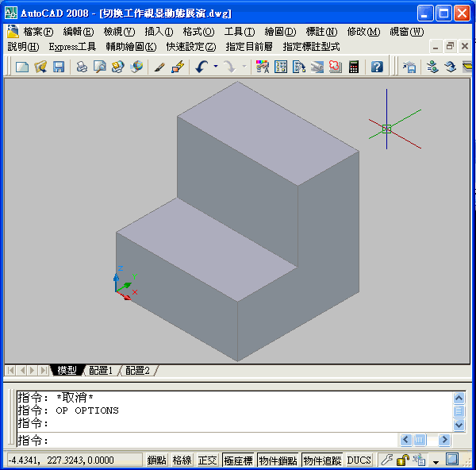
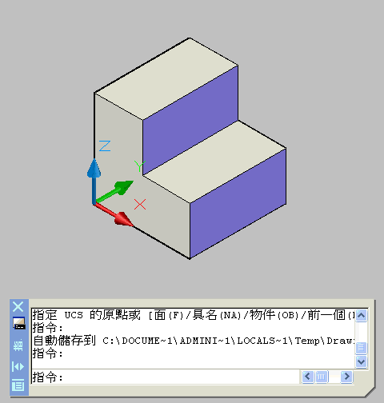

問：我想要在東南等角視圖下畫前視圖和右側視圖，有什麼方法可以快速轉換UCS，我只會打UCS下去轉動X、Y、Z軸，覺得太慢了，有更快的方法嗎？謝謝
-----------------------------------------------------------------------------
要滿足你的需求方式有很多種，以下提供幾種方式供你參考，有問題請再提出來討論喔~
1.開啟視圖工具列(2006以下版本為視景工具列)，快速切換所需要的工作視景：

2.使用 管控面板 的 3D導航功能(2007以上版本新功能)，快速切換所需要的工作視景：

3.自行新增自訂 鍵盤快速鍵(進階方式)，Ctrl Shift 1 快速切換東南等角視景：

PS:此作法比較進階喔，如果要使用這個方法可以參考以下文章~
CUI自訂檔_建立快速鍵的步驟
http://tw.myblog.yahoo.com/tiger-apple/article?mid=2803&next=2256&l=f&fid=27
一樣提供2個方式，動態操作如下，有問題請在提~
方式一:使用ucs工具列快速切換ucs依照各軸旋轉。

方式二:可以在狀態列上打開 動態 UCS，或按 F6 將其打開；使用動態 UCS 功能(2007以上新功能)，在建立物件時，可以暫時自動將 UCS 的 XY 平面與實體模型上的平面對齊，不需要變更X、Y、Z三項座標軸。
